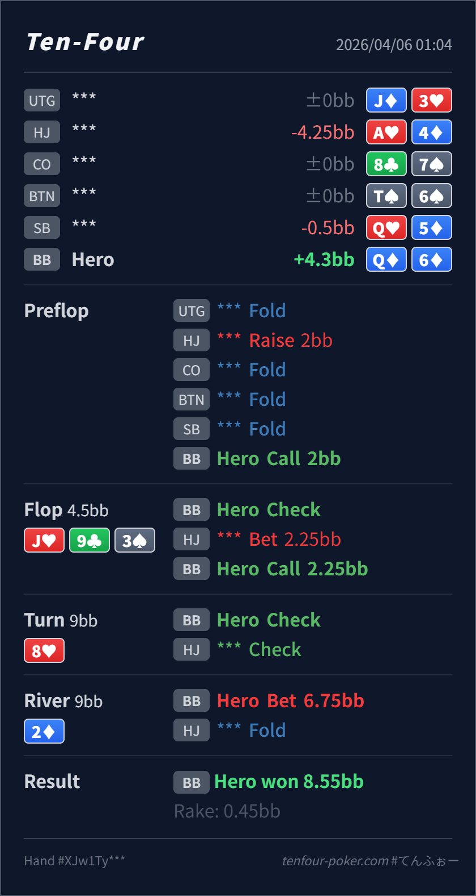

Preflop
良いQ♦6♦ は BB defend として十分入る部類です。
主論点は、river bluff の発想そのものより、そこまで辿り着く flop defend が広すぎないかです。当時の思考メモはないので、「Q-high でも backdoor があるから一回 call したくなる」という仮定で見ます。結論は、river bluff の筋自体は良い一方、見直しどころは flop call のレンジ管理です。
Q♦6♦J♥ 9♣ 3♠ / 8♥ / 2♦Q-high でも backdoor があるから一回くらいは call したくなる という仮定でレビューします。Q♦6♦2BB, BB callJ♥ 9♣ 3♠ / 8♥ / 2♦2.25BB, BB call6.75BB, HJ fold
良いQ♦6♦ は BB defend として十分入る部類です。
J♥ 9♣ 3♠やや甘い
Hero は Q-high のままで、改善余地もそこまで強くありません。
8♥良い
Hero は依然弱いですが、相対的には HJ range が cap します。
2♦かなり筋が良い
Hero はショーダウン価値がなく、turn のレンジ圧縮を受けて bluff を打ちやすいです。
| 論点 | その場で置きがちな見立て | どこがズレたか | 次回の基準 |
|---|---|---|---|
flop の Q♦6♦ | Q-high で backdoor diamond もあるので一回は defend したくなる | J♥ 9♣ 3♠ に対する 50%pot は比較的強い c-bet node で、Q-high + 弱い backdoor だけでは defend が少し広すぎます。 | bluff を作る前に、その river まで辿り着く flop defend が本当に必要か を確認する |
| river の bluff | 弱い hand なので bluff に回すしかない | turn check-check で HJ range はかなり cap し、BB が river で取りにいく発想自体はかなり自然です。 | river bluff は悪くない。ただし そこに至る前段の flop defend を整える方が優先 |
| ストリート | その時点の見え方 | 判断の焦点 | 評価 | 推奨 |
|---|---|---|---|---|
| Preflop | HJ open range は broadway、suited Ax、middle pair を多く含みます。 | Q♦6♦ は BB defend として十分入る部類です。 | 良い | ここは call でよいです。 |
Flop J♥ 9♣ 3♠ | HJ の 50%pot c-bet は Jx, overpair, TT, AQ/KQ, backdoor を含む厚い継続レンジです。 | Hero は Q-high のままで、改善余地もそこまで強くありません。 | やや甘い | ここは fold 寄りです。もう少し明確な backdoor や gutshot がある hand を優先したいです。 |
Turn 8♥ | HJ の check で、強い Jx+ の一部は残るものの、A-high や薄い c-bet hand がかなり残ります。 | Hero は依然弱いですが、相対的には HJ range が cap します。 | 良い | check でよいです。ここで無理に lead を作る必要は高くありません。 |
River 2♦ | turn check-back のあと、HJ 側は A-high, TT-44, 弱い Jx, たまの trap に寄ります。 | Hero はショーダウン価値がなく、turn のレンジ圧縮を受けて bluff を打ちやすいです。 | かなり筋が良い | ここは bluff として悪くありません。size も十分圧がかかっています。 |
river bluff が上手かったか より、そこに至る flop call が必要だったか を先に見たいです。Jx が多い相手なら、そもそも flop の call を絞る方が先です。